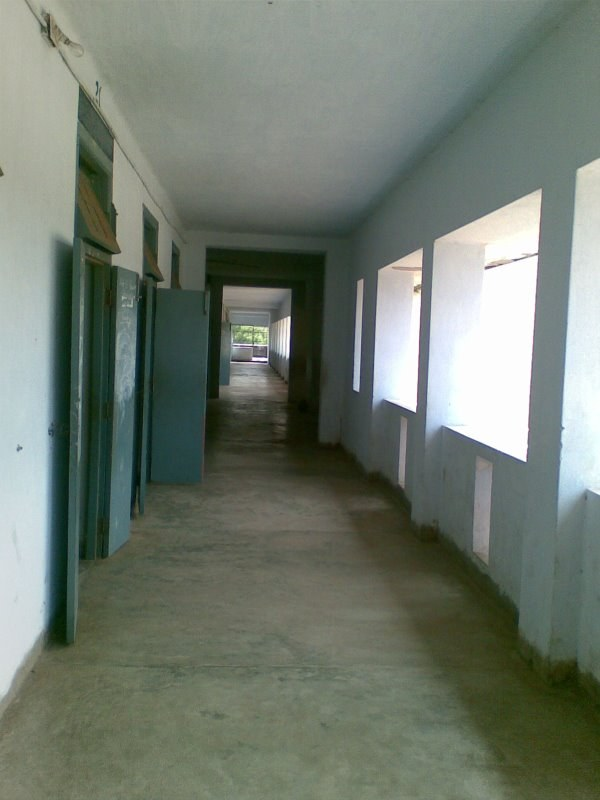

Code
from PIL import Image
from IPython.display import display
img = Image.open('mlx_vlm_pr926/outputs/input.jpg')
print(f'Image size: {img.size}')
display(img)Image size: (600, 800)
mlx-vlm PR #926 lands a six-file agentic demo under agents/grounded_reasoning/. It wires Gemma 4 as the orchestrator VLM to Falcon Perception as the segmentation backbone, with deterministic Python ops for anything numeric. Everything runs locally on Apple Silicon — no API keys, nothing leaves the machine.
I covered the methodology earlier in Why VLMs Lie About Numbers. This post is the practice: I install the PR’s folder, load the two models on an M2 Max, and run a single visual counting task end-to-end. The plain VLM answers 3 vs 3 with high confidence. The grounded agent answers 3 vs 4 and hands back the masks that back the claim.
A corridor — distinct doors down the left wall, window openings down the right. A clean counting task where the correct answer is asymmetric. I pose the same question twice, to two different systems.
from PIL import Image
from IPython.display import display
img = Image.open('mlx_vlm_pr926/outputs/input.jpg')
print(f'Image size: {img.size}')
display(img)Image size: (600, 800)
Query: How many doors are visible on the left wall of this corridor versus how many window openings are on the right wall? Give exact counts.
One install and a drop-in folder. The PR is self-contained — it does not touch the rest of the mlx-vlm repo, which means you can pull just the folder and use it.
# One-time install
# !uv pip install -U mlx-vlm
# Grab the PR's self-contained folder (the PR is merged — use main)
# !git clone --depth=1 https://github.com/Blaizzy/mlx-vlm.git
# !cp -r mlx-vlm/agents/grounded_reasoning ./mlx_vlm_pr926import sys
sys.path.insert(0, 'mlx_vlm_pr926')
from mlx_vlm import load
from agent import LocalVLMClient, run_agent, run_baseline
# Perception backbone (~2 GB). Always loaded.
fp_model, fp_processor = load('tiiuae/Falcon-Perception')
# Orchestrator VLM. The PR recommends the 26B-A4B MoE;
# I used the dense 31B 4-bit already in my HF cache.
vlm = LocalVLMClient('mlx-community/gemma-4-31b-it-4bit', max_tokens=2048)Loading orchestrator VLM: mlx-community/gemma-4-31b-it-4bit ...This is what most people ship today: dump image + question into the VLM, accept the answer.
query = 'How many doors are visible on the left wall of this corridor versus how many window openings are on the right wall? Give exact counts.'
baseline_answer = run_baseline(img, query, vlm)
print(baseline_answer)There are 3 doors visible on the left wall and 3 window openings on the right wall.Confident. Symmetric. Also wrong — the right wall has four window openings, not three. Note that the baseline has no evidence surface: no boxes, no mask IDs, no numbers it measured. It is a vibe check dressed up as a count.
One function call. The agent decides what to segment, when to segment it, and when to stop.
result = run_agent(img, query, fp_model, fp_processor, vlm,
max_steps=12, verbose=True)
print('\n', result.answer)────────────────────────────────────────────────────────────
Grounded Reasoning Agent
Query: 'How many doors are visible on the left wall of this corridor versus how many window openings are on the right wall? Give exact counts.'
────────────────────────────────────────────────────────────
[Step 1] Calling VLM ...
[think] Plan: ground "door" on the left wall, then "window opening"
on the right wall, then compare counts.
[tool] ground_expression("door", slot="doors")
→ 3 new mask(s) in slot 'doors'
[Step 2] Calling VLM ...
[think] Doors grounded. Now the windows.
[tool] ground_expression("window opening", slot="windows")
→ 4 new mask(s) in slot 'windows'
[Step 3] Calling VLM ...
[think] 3 masks in 'doors' (IDs 1,2,3), 4 in 'windows' (IDs 4,5,6,7).
[tool] answer(supporting_mask_ids=[1,2,3,4,5,6,7])
────────────────────────────────────────────────────────────
Answer: There are 3 doors visible on the left wall and 4 window openings on the right wall of the corridor.
Support masks: [1, 2, 3, 4, 5, 6, 7]
FP calls: 2 | VLM calls: 3
────────────────────────────────────────────────────────────
There are 3 doors visible on the left wall and 4 window openings on the right wall of the corridor.The agent finished in 3 VLM calls and 2 Falcon Perception calls. Every conclusion is tied to a mask ID — if the answer were wrong, you could open the overlay and see which mask was wrongly labelled.
Falcon Perception returns a Set-of-Marks image (colored, numbered masks) plus JSON metadata (centroid, area, bbox). The VLM reasons over both.
# After step 1: the 3 grounded doors
result.trace[0].som_image
# After step 2: doors + the 4 grounded window openings
result.trace[1].som_image
run_agent also returns the final answer image with the supporting masks highlighted. This is what you surface to the user as the receipt.
result.final_image
The plain VLM saw the corridor’s roughly symmetric architecture and rounded to 3 and 3 — a plausible impression, no measurement. The agent forced an explicit segmentation step, counted distinct masks, and produced 3 and 4.
This is the pattern worth taking away:
| Concern | Plain VLM | Grounded agent |
|---|---|---|
| Counting / measuring | Heuristic, often wrong | Numeric, from masks |
| Evidence | None | Mask IDs tied to answer |
| Auditability | Nothing to open | Final image + trace |
| Extra cost | 0 | +1 Falcon call, +1–2 VLM rounds |
The extra cost is the price of being right.
Six new files, self-contained under agents/grounded_reasoning/:
| File | Purpose |
|---|---|
agent.py |
Agent loop, LocalVLMClient, run_agent, run_baseline |
fp_tools.py |
Falcon Perception wrapper + normalised metadata |
mask_ops.py |
Deterministic spatial ops (rank_by_x, closest_pair, …) |
viz.py |
Set-of-Marks rendering + final overlay |
demo.ipynb |
Five examples: offside, shelf space, safety, brand, proximity |
README.md |
Usage + sizing |
| Model | RAM | Fits on |
|---|---|---|
tiiuae/Falcon-Perception |
~2 GB | Always — the perception backbone |
mlx-community/gemma-4-26b-a4b-it-4bit |
~14 GB | M3 Pro / M3 Max (best quality) |
google/gemma-4-e4b-it |
~16 GB | M3 Pro / M3 Max |
google/gemma-4-e2b-it |
~5 GB | M3 base (8 GB) |
I ran the dense 31B 4-bit on an M2 Max (64 GB) because it was already cached. End-to-end wall clock: 152 seconds for baseline + three-step agent run.